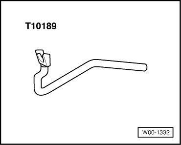
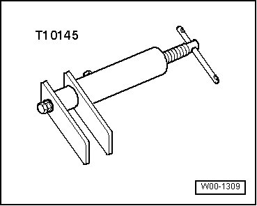
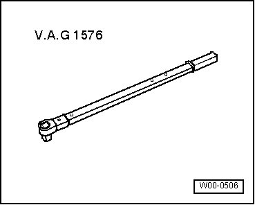
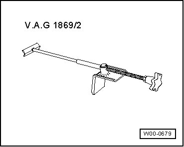
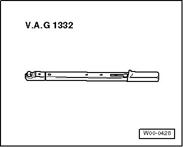
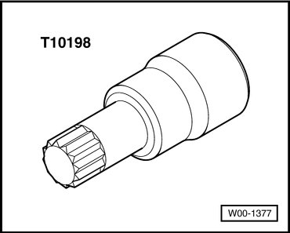
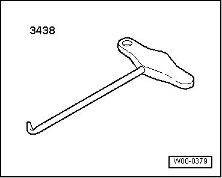

Brakes and Traction Control: Tools and Equipment
Special Tools
Special tools, testers and auxiliary items required
• Release tool (T10189)

• Torque wrench (VAG 1331)

• Piston resetting tool (T10145)

• Torque wrench (VAG 1410)

• Torque wrench (VAG 1576)

• Brake pedal actuator (VAG 1869/2)

• Torque wrench (VAG 1332)

• Socket XZN 16 (T10198)

• Bracket with spindle and hook (3438)
